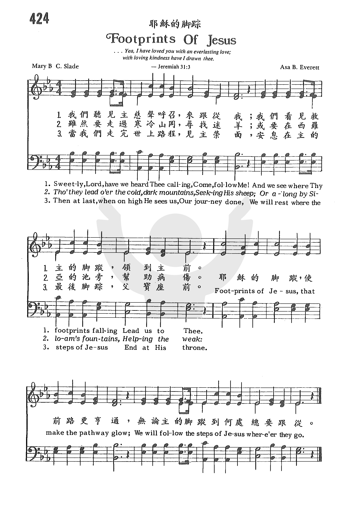
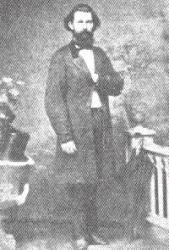

|
|
|
|
1 Sweetly, Lord, have we heard Thee calling, Refrain: 2 Though they lead o’er the cold dark mountains, 3 If they lead through the temple holy, 4 Then at last, when on high He sees us, |
1 |
|
https://www.zanmeishige.com/tab/25999.html?songbook=1&index=424
 |
|
|
|
|
-

Hymn 424 耶穌的脚踪 Footprints of Jesus https://youtu.be/Bu3Hj9yr4lY -
https://youtu.be/LpqLpO3CFGo https://www.mred365.cn/uploads/soft/210910/44-210910221020.mp3 -
Footsteps of Jesus w/Lyrics https://www.youtube.com/watch?v=ejZFqvjMWQc
0982
Footprints Of Jesus 耶稣的脚踪
| Text: | Footsteps of Jesus |
| Author: | Mary B. C. Slade |
| Tune: | FOOTSTEPS |
| Composer: | Asa B. Everett |
| Short Name: | M. B. C. Slade |
| Full Name: | Slade, M. B. C. (Mary Bridges Canedy), 1826-1882 |
| Birth Year: | 1826 |
| Death Year: | 1882 |
Mary Bridges Canady Slade USA 1826-1882.

Born in Fall River, MA, she was well-educated and became a minister's wife, teacher, and poet. She was assistant editor of The New England Journal of Education. She also authored hymns, Sunday school materials and books on education, primarily used for training teachers. She authored a children's magazine, “Wide-awake”. She and her husband were active in the underground railroad (helping slaves achieve their freedom). She spent her whole life living in the same town.
John Perry
| Short Name: | A. Brooks Everett |
| Full Name: | Everett, A. Brooks (Asa Brooks), 1828-1875 |
| Birth Year: | 1828 |
| Death Year: | 1875 |
Asa Brooks Everett MusDoc USA 1828-1875.

Born in VA, he planned to be a doctor, but decided to study music instead. He studied in Boston for four years and also in Leipzig, Germany for four years.. He composed many gospel tunes and edited “The Sceptre” a New York publication. His brothers, Benjamin and Leonard, were also composers. He and Leonard organized a musical instruction system in Richmond, VA, in the 1850s. By 1861, 50 teachers and singing schools were representing them and using their publications. He died in Nashville, TN.
John Perry
LX1790
Our Best
434耶稣的脚踪
耶穌的腳蹤 Footsteps of Jesus
我們聽見主慈聲呼召：來跟從我；
我們看見救主的腳蹤，領到主前。
雖然要走過寒冷山岡，尋找迷羊；
或要在西羅亞的池旁，幫助病傷。
跟隨主進入聖所、聖殿，宣講主道；
或在窮苦人家事奉主，同心禱告。
當我們走完世上路程，見主榮面；
安息在主的最後腳蹤，父寶座前。
（副歌）
耶穌的腳蹤，使前路更亨通，
無論主的腳蹤到何處總要跟從。
耶穌在加利利海濱呼召西門彼得和安得烈跟從祂，主也呼召其他信徒跟隨祂的腳蹤，走信心的道路，無論高山峻嶺，汪洋大海，主必前導。
許多默默無名的傳道者，甚至犧牲生命來跟隨耶穌的腳蹤。
這首詩的
第一節：主呼召我們跟隨祂的腳蹤。
第二節：隨主尋找迷羊（路加福音十五章的寓言），或治病扶傷（約翰福音九
章，主醫癒生來就盲的瞎子）。
第三節：隨主進入聖所，聽主教訓和服侍貧苦卑微的人。
第四節：主的終點是天上寶座，基督徒的終極是永生。
本詩作者施蕾達（Mary B. C. Slade, 1826-1882）出生在美國麻省。 她是一位教員，一度任新英格蘭教育雜誌助理編輯。她的丈夫是一位傳道人。
在她所作的福音詩歌中，這首詩被聖詩本選用得最多。施蕾達曾為多位十九世紀末葉的名作曲家填寫聖詩。
她另一首著名的聖詩是「誰站在我心門外」（Who at My Door Is Standing）。
本詩歌由艾瑞德（Asa B. Everett, 1828-1875）譜曲。他出生在美國田納西州，修畢醫科後，放棄實習，改選音樂為專業。
艾瑞德與他兄弟赴波士頓學習音樂，回家鄉教授音樂一段時期後，又赴德國攻讀音樂四年。
回國後，他和兄弟及友人在維吉尼亞州成立艾瑞德公司，繼而在賓州及喬治亞州設立分公司。 美國南北戰爭前，該公司聘有五十多位音樂教師。
他寫了許多福音時歌，並編纂多本聖詩。
邊雲波弟兄與胡問憲弟兄合作了一部差傳聖曲「無名的傳道者」其中有一首合唱曲「提醒」，其歌詞如下：
是自己底手，是自己底手，放下了世上的享受，
是自己的腳，是自己的腳，甘心到受苦難的道路上來奔走，
所以寧肯叫委曲，甚至必須死亡臨頭，
遙望著各各他山頂，就是到死 — 也絕不退後！
有人比喻無名的傳道者如火柴，他們看自己為平凡，隱藏自己，正像火柴一樣，其貌不揚，普通得無法再普通，到處都是，不被人注意。
但是，他們就是甘心情願的為主擺上，燃點自己，為主燒盡。
中英文聖詩集參考
英文歌名 Footsteps
of Jesus
頌主新歌 434
頌主新歌(中英雙語) 438
教會聖詩 424
歡欣讚美 685
聖詩 360
“FOOTPRINTS OF JESUS”
“If any will come after Me, let him…take up his cross, and follow Me” (Matt.
16:24)
INTRO.: A song which talks about following after the example of Jesus is
“Footprints of Jesus” (#239 in Hymns for Worship Revised, #195 in Sacred
Selections for the Church). The text was written by Mrs. Mary Bridges Canedy
Slade, who was born at Fall River, MA, on Jan. 18, 1826, and spent her entire
life in her hometown. Her husband was a Methodist minister in Fall River. A
schoolteacher, she also served as assistant editor of The New England Journal of
Education for a period of time.
In addition, Mrs. Slade wrote a number of gospel song texts. This one, perhaps
her best known, seems to have been first published in The Amaranth, a
supplemental Sunday school collection for the Methodist Episcopal Church, South,
which was prepared by instruction of its General Conference of 1870 and compiled
at Nashville, TN, in 1871 by Atticus G. Haygood and Rigdon McCoy McIntosh
(1836-1899). Another one of Mrs. Slade’s well-known hymns is “The Kingdom Is
Coming,” changed in many of our books to “The Kingdom Is Spreading,” and
beginning “From all the dark places of earth’s heathen races,” which first
appeared in 1873 with music by McIntosh.
The tune (Footsteps) for “Footprints of Jesus” was composed for The Amarinth by
Asa Brooks Everett (1828-1875). Other collaborations by Slade and Everett
include “Beyond This Land Of Parting.” “Hark, The Gentle Voice,” “There’s A
Fountain Free,” “Hear Him Calling,” “To That City Will You Go?”, and “Who At My
Door Is Standing?” Mrs. Slade died at Fall River on Apr. 15, 1882.
Among hymnbooks published by members of the Lord’s church for use in churches of
Christ, “Footprints of Jesus” has appeared in the 1921 Great Songs of the Church
(No. 1) and the 1937 Great Songs of the Church No. 2 both edited by E. L.
Jorgenson; the 1935 Christian Hymns (No. 1), the 1948 Christian Hymns No. 2, and
the 1966 Christian Hymns No. 3 all edited by L. O. Sanderson; the 1959 Majestic
Hymnal No. 2 and the 1978 Hymns of Praise both edited by Reuel Lemmons; the 1963
Abiding Hymns edited by Robert C. Welch; the 1963 Christian Hymnal edited by J.
Nelson Slater; the 1965 Great Christian Hymnal No. 2 edited by Tillit S. Teddlie;
the 1971 Songs of the Church, the 1990 Songs of the Church 21st C. Ed., and the
1994 Songs of Faith and Praise all edited by Alton H. Howard; the 1978/1983
Church Gospel Songs and Hymns edited by V. E. Howard; the 1986 Great Songs
Revised edited by Forrest M. McCann; the 1992 Praise for the Lord edited by John
P. Wiegand; the 2007 Sacred Songs of the Church edited by William D. Jeffcoat;
the 2009 Favorite Songs of the Church and the 2010 Songs for Worship and Praise
both edited by Robert J. Taylor Jr.; and the 2012 Psalms, Hymns, and Spiritual
Songs edited by Steve Wolfgang et. al., in addition to Hymns for Worship and
Sacred Selections.
This song discusses what following Jesus entails.
I. Stanza 1 tells us that the footprints of Jesus are steps meant for our
example.
1. Sweetly, Lord, have we heard Thee calling,
Come, follow Me!
And we see where Thy footprints falling
Lead us to Thee.
A. The means by which we hear Jesus calling today is through the gospel: 2
Thess. 2:14
B. Yet, by means of the gospel, He still calls us to follow Him as He did the
apostles of old: Mk. 1:16-17
C. Peter tells us that Jesus left us an example that we should follow in His
footsteps: 1 Pet. 2:21-22
II. Stanza 2 tells us that the footprints of Jesus are steps of helping others
2. Though they lead o’er the cold, dark mountains,
Seeking His sheep;
Or along by Siloam’s fountains,
Helping the weak.
A. Jesus told the story of the good shepherd who went through the cold, dark
mountains: Matt. 18:12
B. The purpose of the shepherd was to seek His sheep: Lk. 15:4-5
C. Jesus Himself went by Siloam’s fountains to help men see: Jn. 9:1-7
III. Stanza 3 tells us that the footprints of Jesus are steps of proclamation
3. If they lead through the temple holy,
Preaching the Word;
Or in homes of the poor and lowly,
Serving the Lord.
A. Jesus often went to the temple holy: Mk. 14:49
B. His purpose there was to preach the word: Matt. 11:5
C. We must likewise follow His example to serve others rather than being served:
Matt. 26:28
IV. Stanza 4 tells us that the footprints of Jesus are steps of sorrow and
suffering
5. If Thy way and its sorrows sharing,
We go again,
Up the slope of the hillside, bearing
Our cross of pain.
A. Jesus certainly experienced the way of sorrow and suffering, as illustrated
in Gethsemane: Lk. 22:41-44
B. And He endured even more suffering as He went up the slope of the hillside
bearing His cross: Jn. 19:17
C. We too must go through life taking up our cross to follow Him: Lk. 9:23
V. Stanza 5 tells us that the footprints of Jesus are steps that will walk the
street of heaven
6. By and by, through the shining portals,
Turning our feet,
We shall walk, with the glad immortals,
Heaven’s golden street.
A. Portals are gates, and the eternal city is pictured as having twelve gates:
Rev. 21:12
B. It is also pictured as being populated by glad immortals who have done the
Lord’s commandments: Rev. 22:14
C. And it is described as having a street of gold: Rev. 21:21
VI. Stanza 6 tells us that the footprints of Jesus are steps which will lead to
rest at His throne
7. Then at last when on high He sees us,
Our journey done,
We will rest where the steps of Jesus
End at His throne.
A. When the Lord returns, we shall see Him as He is, and He will also see us: 1
Jn. 3:2
B. Even before then, if He tarries, our journey will be done when we pass from
this life in death: Rev. 14:13
C. But either way, the promise of Jesus is that those who follow Him here will
sit down with Him on His throne just as He sat down with His Father on His
throne: Rev. 3:21
CONCL.:
The chorus states our desire to follow in the steps of Jesus.
Footprints of Jesus,
That make the pathway glow;
We will follow the steps of Jesus
Where’er they go.
There is one other stanza that has not been used in any of our books.
4. Though, dear Lord, in Thy pathway keeping,
We follow Thee;
Through the gloom of that place of weeping,
Gethsemane!
This is a good song for children to learn, for adults to sing, and for everyone
to practice that we might be encouraged to walk in the “Footprints of Jesus.”
https://hymnstudiesblog.wordpress.com/2012/09/17/footprints-of-jesus/
Footprints (poem)

"Footprints", also known as "Footprints in the Sand", is a popular allegorical religious poem. It describes a person who sees two pairs of footprints in the sand, one of which belonged to God and another to him or herself. At some points the two pairs of footprints dwindle to one; it is explained that this is where God carried the protagonist.
Content[edit]
This popular text is based in Christian beliefs and describes an experience in which a person is walking on a beach with God. They leave two sets of footprints in the sand. The tracks represent stages of the speaker's life. The two trails dwindle to one, especially at the lowest and most hopeless moments of the person's life. When questioning God, believing that the Lord must have abandoned his love during those times, God gives the explanation, "During your times of trial and suffering, when you see only one set of footprints, it was then that I carried you."
Authorship and origin[edit]
The authorship of the poem is disputed, with a number of people claiming to have written it. In 2008, Rachel Aviv in a Poetry Foundation article[1] discusses the claims of Burrell Webb, Mary Stevenson, Margaret Fishback Powers, and Carolyn Joyce Carty. Later that year, The Washington Post, covering a lawsuit between the claims of Stevenson, Powers and Carty, said that "At least a dozen people" had claimed credit for the poem.[2]
The three authors who have most strenuously promoted their authorship are Margaret Powers (née Fishback), Carolyn Carty, and Mary Stevenson. Powers says she wrote the poem on Canadian Thanksgiving weekend, in mid-October, 1964.[3] Powers is among the contenders who have resorted to litigation in hopes of establishing a claim. She is occasionally confused with American writer Margaret Fishback. Powers published an autobiography in 1993.[3]
Carolyn Carty also claims to have written the poem in 1963 when she was six years old based on an earlier work by her great-great aunt, a Sunday school teacher. She is known to be a hostile contender of the "Footprints" poem and declines to be interviewed about it, although she writes letters to those who write about the poem online.[1] A collection of poetry by Carty with a claim to authorship of "Footprints" was published in 2004.[4]
Mary Stevenson is also a purported author of the poem circa 1936.[5][6] A Stevenson biography was published in 1995.[7]
Popular use of phrase[edit]
Before its appearance in the 1970s, the phrase "footprints in the sand" occurred in other works. The most dominant usage in prose is in the context of fictional or nonfiction adventure or mystery stories or articles. Prominent fiction includes Daniel Defoe's 1719 novel Robinson Crusoe and Nathaniel Hawthorne's short story Foot-prints on the Sea-shore published in the Democratic Review.[8] Hawthorne published the story again in Twice-Told Tales and it has been reprinted many times since. A line in the story reads, "Thus, by tracking our foot-prints in the sand, we track our own nature in its wayward course, and steal a glance upon it, when it never dreams of being so observed. Such glances always make us wiser."[9] Non-fiction includes the 1926 post-kidnapping discovery of Aimee Semple McPherson in the northern Mexican desert.[10]
In the two centuries before 1980, when "Footprints" entered popular American culture, many books, articles, and sermons appeared with "Fooprints in the Sand" as a title. Some of them concerned the lives of Christian missionaries. Footprints and Living Songs is an 1883 biography of hymn-writer Frances Ridley Havergal.[11] In 1839, "A Psalm of Life" by Henry Wadsworth Longfellow contained the lines:[12]
-
- Lives of great men all remind us
- We can make our lives sublime,
- And, departing, leave behind us
- Footprints on the sands of time.
Within a decade, the last phrase of the poem was being used in public discourse without attribution, apparently on the assumption that any literate reader would know its origin. In some usages "of time" disappeared; later, "on" seems to become "in". "The Object of a Life" (1876) by George Whyte-Melville includes the lines:
-
- To tell of the great example, the Man of compassion and woe;
- Of footprints left behind Him, in the earthly path He trod,
- And how the lowest may find Him, who straitly walk with God
was published in the widely read (and plagiarized) Temple Bar.[13] The lines here are strikingly similar in many respects to those seen in contemporaneous hymn lyrics and later poetry.
Biblical background[edit]
Deuteronomy 1:31 presents the concept of "God bearing you". The 1609 Douay-Rheims Bible Old Testament translation from Latin into English uses the wording, "And in the wilderness (as thou hast seen) the Lord thy God hath carried thee, as a man is wont to carry his little son, all the way that you have come, until you came to this place." In 1971, the New American Standard Bible used the language "and in the wilderness where you saw how the LORD your God carried you". Nearly identical wording is used in other late 20th century translations, including the New International Version of 1978.
Possible 19th century origins[edit]
May Riley Smith's poem "If", published without attribution in the Indianapolis Journal in 1869,[14][15] includes a stanza that describes God's footprints in the sand next to a boy's:
-
- If I could know those little feet were shod in sandals wrought of light in better lands,
- And that the foot-prints of a tender God ran side by side with his, in golden sands,
- I could bow cheerfully, and kiss the rod, since Benny was in wiser, safer hands.
June Hadden Hobbs suggested that the origin of the modern "Footprints" is in Mary B. C. Slade's 1871 hymn "Footsteps of Jesus"[16][17] as "almost surely the source of the notion that Jesus's footprints have narrative significance that influences the way believers conduct their life stories...it allows Jesus and a believer to inhabit the same space at the same time...Jesus travels the path of the believer, instead of the other way around."[16]
A similar argument could be made for Footprints of Jesus by L. B. Thorpe as published in the 1878 The International Lesson Hymnal.[18]
Aviv suggests that the source of the modern "Footprints" allegory is the opening paragraph of Charles Haddon Spurgeon's 1880 sermon "The Education of the Sons of God".[19] He wrote:
"And did you ever walk out upon that lonely desert island upon which you were wrecked, and say, 'I am alone, — alone, — alone, — nobody was ever here before me'? And did you suddenly pull up short as you noticed, in the sand, the footprints of a man? I remember right well passing through that experience; and when I looked, lo! it was not merely the footprints of a man that I saw, but I thought I knew whose feet had left those imprints; they were the marks of One who had been crucified, for there was the print of the nails. So I thought to myself, 'If he has been here, it is a desert island no longer.'"
In 1883, an American encyclopedia of hymns by female writers included Jetty Vogel, an English poet. Vogel's "At the Portal" follows someone looking at their footprints as they deviate from the proper path. Vogel's hymn has an angel's footsteps but lacks the "I carried you" of the modern "Footprints".[20]
In 1892, the Evening Star ran a short story "Footprints in the Sand" written by Flora Haines Loughead for the Star.[21] The work uses a metaphor for Christ, of a father following footprints in the sand of another's child headed for danger, as he wonders, "Why was it that there was nowhere any sign of a larger footprint to guide the little babyish feet?"
Possible 20th century origins[edit]
In 1918, Mormon publication The Children's Friend re-published the Loughead piece (credited, but misspelled "Laughead"), ensuring a wider distribution in the western states.[22] Chicago area poet Lucille Veneklasen frequently submitted poems to the Chicago Tribune in the 1940s and 1950s; one entitled "Footprints" was published in the Tribune in late 1958:[23]
-
- I walked the road to sorrow—a road so dark with care, so lonely, I was certain that no one else was there.
- But suddenly around me were beams of light, stretched wide; and then I saw that someone was walking by my side.
- And when I turned to notice this road which I had trod, I saw two sets of footprints—My own... and those of God.
Veneklasen's poem appeared occasionally in newspaper obituaries, commonly lacking attribution, and often with the decease substituted for "I".
In 1963 and 1964, the Aiken Standard and Review in South Carolina ran a poem by frequent contributor M. L. Sullivan titled "Footprints". This was a bit of romantic verse that moves from sadness at "lone footprints in the sand" to close with "our footprints in the sand".[24]
Early documentable history[edit]
The earliest known formally dated publications of any variants of the poem are from 1978, with three different descriptions of the person and also the setting. The first to appear in July 1978, in a small Iowa town newspaper, is a very concise (six-sentence) version featuring an "elderly man" and "rocky roads".[25] There is no attribution for this piece, and this version does not seem to have appeared in any other publication.
-
- An elderly man, who had lived his life and left this world to go and meet his Maker asked the Lord a question.
- "As I'm looking down on the paths I've trod, I see two sets of footprints on the easy paths.
- But down the rocky roads I see only one set of footprints.
- "Tell me, Lord, why did you let me go down all those hard paths alone?"
- The Lord smiled and simply replied, "Oh, my son, you've got that all wrong!
- I carried you over those hard paths."
The second and most complete early appearance was in a September 1978 issue of Evangel, a semi-monthly Church of God publication.[26] This version is similar to the "Carty" version but is credited to "Author Unknown--(Submitted by Billy Walker)". A third version appeared in October 1978, in two California papers, first in Oakland[27] and twelve days later in Shafter,[28] with a "young woman" and a "sandy pathway" in a "desert wilderness". This version does not appear to have re-emerged later.
-
- [A] young woman who was going through hard times ... began to pray to God for help.
- ... [S]uddenly in her mind's eye she saw two sets of footprints side by side on a sandy pathway.
- Immediately her spirits lifted because she interpreted this to mean that God was with her and was walking beside her.
- Then the picture changed. She now saw the footprints located in a vast desert wilderness, and instead of two sets of footprints, there ::was only one.
- Why was God no longer beside her? As despair settled back over her, she began to cry.
- Then the inner voice of God softly spoke and said, "I have not left you. The one set of footprints is mine.
- You see, I am carrying you through the wilderness."
In 1979, additional appearances occurred: two in small Louisiana and Mississippi newspapers, one in a Catholic journal, two in widely syndicated newspapers columns, one on a nationwide radio program and reprinted by two small papers, and one in a prominent evangelist's biography. In January 1979, the Opelousas, Louisiana, Daily World published a near exact Carty version but with a "My dear child" mutation at the end, and no attribution.[29]
In March, the Winona Times presented a Powers-like version with "a certain elderly man ... walking along a sea shore" where "Out of the waves shot rays of light, mystic and wonderful that played across the sky illuminating scenes from his life". He was "sorely troubled and his life had been at its saddest and lowest ebb."[30]
The March 1979 issue of Liguorian, a monthly publication of the Catholic Congregation of the Most Holy Redeemer, published a complete, nearly unmodified first-person version following Carty, but attributed to "Author Unknown". [31]
Christian televangelist and columnist Robert Schuller noted in his column that a reader had sent him a story; it is unclear whether the version presented in the column—which casts a "pilgrim" as the human character—was used verbatim or was rewritten by Schuller: this particular version has not been re-published after the column's original nationwide publication during March–August, 1979.[32]
-
- [A] pilgrim arrived in heaven and God said to him, "Would you like to see where you've come from?"
- When the pilgrim responded that he would, God unfolded the story of his whole life and he saw footprints from the cradle to the grave.
- Only there were not only the footprints of the pilgrim, but another set of prints alongside.
- The pilgrim said, "I see my footprints, but whose are those?"
- And the Lord said, "Those are My footprints. I was with you all the time."
- Then they came to a dark, discouraging valley and the pilgrim said, "I see only one set of footprints through that valley.
- I was so discouraged. You were not there with me. It was just as I thought–I was so all alone!"
- Then the Lord said, "Oh, but I was there. I was with you the whole time.
- You see, those are MY footprints. I carried you all through that valley."
In April 1979, the Havre Daily News in Montana published a variant of the Carty version told in first person with slightly different punctuation and a "never, never" alteration to match the "precious, precious child" of the previous sentence. The author of the local weekly column noted that it had been supplied by a friend who had "first heard [it] when Paul Harvey quoted it on his radio program."[33] It is unknown whether the listener had copied it down from memory or received a written version from Mr. Harvey or elsewhere. No recordings or transcriptions of Mr. Harvey's daily radio news and commentary broadcasts are known to have survived. A verbatim copy of the Havre instance ran in a small, inmate-produced newsletter published by the Napa State Hospital, in July 1979.[34]
Advice columnist Ann Landers[35] published an exact copy of the Stevenson version in July 1979. The column indicates that the correspondent who provided the work, claims to have carried a tattered copy around "for years" with no further explanation of its publication source. She printed the piece again in late February 1982 in response to reader demand and noted that it had also appeared in Reader's Digest.[36] The 1982 republication added a novel phrase "I would never desert you".
Christian televangelist Jerry Falwell's 1979 biography, Jerry Falwell: Aflame for God, opens a chapter with an expanded "a man dreamed" version.[37]
Humorist and columnist Erma Bombeck[38] published a condensed version of Stevenson's variant in July 1980.
During the 1980 United States presidential campaign, Ronald Reagan used a variant of "Footprints", with himself as the human, as the closing lines in an August speech to evangelical leaders in Dallas, Texas.[39] President Reagan used "Footprints" again in a speech at the annual National Prayer Breakfast on February 5, 1981.[40] These versions appear to be Stevenson paraphrases.
Advice columnist Dear Abby ran a Carty version attributed to "Author Unknown" in late 1981.[41]
Influence[edit]
{kind=link}
In 1983, Cristy Lane released a country gospel song based on the poem called "Footprints in the Sand". The song peaked at No. 64 on the Billboard Country chart and No. 30 on the U.S. Christian chart.[42]
The 1983 television movie Choices of the Heart closes with lead character Jean Donovan reciting a condensed version of Powers/Carty.[43]
In 1984, Ken Brown published a version of the poem in rhyme and rhythm as opposed to the more commonly known free form versions popular today.[citation needed]
In 1994, English singer Chris de Burgh included a summary of the poem as the fourth stanza in his song "Snows of New York" in the album This Way Up: In my dream we walked, you and I to the shore / Leaving footprints by the sea / And when there was just one set of prints in the sand / That was when you carried me.[44]
Per Magnusson, David Kreuger, Richard Page, and Simon Cowell wrote a song based on the poem, called "Footprints in the Sand", which was recorded by Leona Lewis.[45] It appears on Lewis's debut album Spirit. Another song inspired by the poem called "Footprints" was recorded by Dancehall/Reggae group T.O.K.[46]
The poem is parodied in the Half Man Half Biscuit song "Footprints", off the 1993 album This Leaden Pall. In the song, the Lord explains the fact that there is only one set of footprints this way: "During your times of trial and suffering, when you see only one set of footprints, that must have been when I was appearing on . . . Junior Kick Start!"[47]
Some have interpreted the lyrics of "I Would Be Your Slave" by English singer and songwriter David Bowie to be a reference to the poem: I don't sit around and wait, I don't give a damn / I don't see the point at all, no footprints in the sand.[48] The song appears on the 2002 album "Heathen (David Bowie album)" and deals with Bowie's longing for a supreme deity to make themselves known to the singer.[49]
The poem was also the inspiration and chorus for the G-Unit song "Footprints", from their 2003 debut album "Beg For Mercy".
The poem was used in the memorial service for Air France Flight 447 on 3 June 2009.[50]
In 2016, a larger-than-life sculpture inspired by the poem was installed at Pippen Memorial Park in Carthage, Texas.[51]
See also[edit]
- Third Man factor
- Parable of the drowning man, another story about God and his relationship with humanity often retold among modern Christians
https://en.wikipedia.org/wiki/Footprints_(poem)